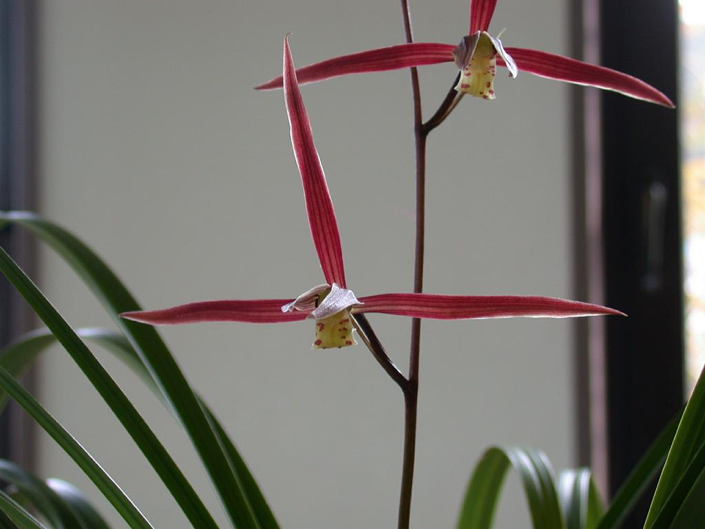
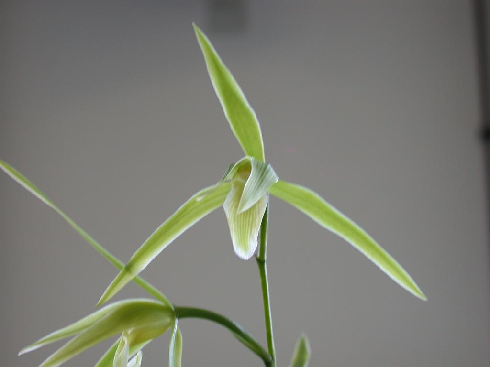
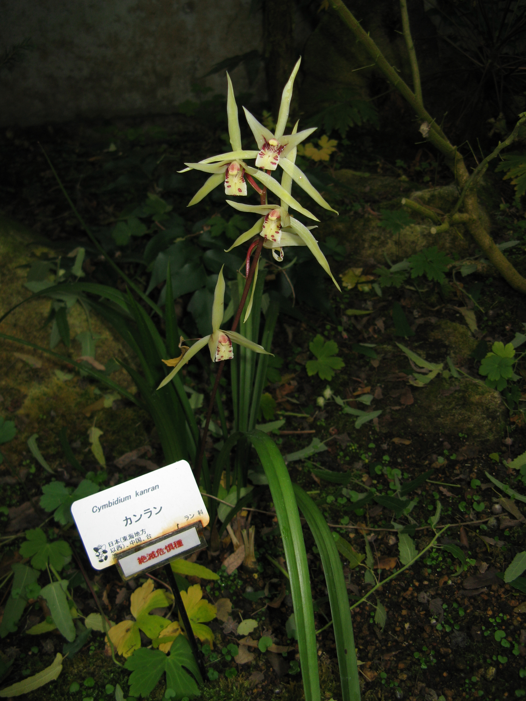

Hanlan (Cymbidium kanran): The Cold Orchid with Quiet Fragrance
Published: July 28, 2026 | Category: Orchid Species

Photo by Keisotyo, via Wikimedia Commons, CC BY-SA 3.0 / GFDL
While other orchids retreat for the winter, Hanlan prepares to bloom. The Cold Orchid — as its name suggests — flowers in the deepest part of the year, when temperatures drop, days are short, and the garden is quiet. This unusual timing gives Hanlan a special place in Chinese orchid culture: it is the orchid that keeps company with those who appreciate beauty in stillness.
Hanlan (Cymbidium kanran) is one of the five major Chinese cymbidium species. Its name — Han (寒) meaning "cold" — reflects its most distinctive characteristic: the ability to produce elegant, fragrant flowers in the winter months when most other plants are dormant.
Species Profile
| Common Name | Hanlan / Cold Orchid (寒兰) |
| Scientific Name | Cymbidium kanran |
| Family | Orchidaceae |
| Native Range | China, Japan, Korea |
| Bloom Season | Late autumn to winter |
| Conservation Status | Cultivated; protected in some wild regions |

Photo by Keisotyo, via Wikimedia Commons, CC BY-SA 3.0
Appearance and Characteristics
Hanlan has a distinctive appearance that sets it apart from other Chinese cymbidiums. Its leaves are slender and elegant, 30–60 centimeters long, with a subtle arch that gives the plant a refined, graceful silhouette. The leaf color is a deep, rich green, often with a slight gloss that catches the low winter light beautifully.
The flowers of Hanlan are perhaps the most star-like among Chinese cymbidiums. Unlike the round, full flowers of Chunlan or the layered blossoms of Huilan, Hanlan's flowers have narrow, elongated sepals and petals that spread outward, creating a star-shaped profile. The colors range from pale green to yellowish-green, sometimes with a faint purplish or brownish tinge. The lip is typically marked with delicate spots and stripes in maroon or deep purple.
Hanlan flower spikes are tall and slender, rising 40–60 centimeters above the leaves, carrying 5–15 individual flowers. The overall effect is one of airy elegance — a plant that looks as if it were painted in ink on a winter scroll.

Photo by KENPEI, via Wikimedia Commons, GFDL
Hanlan in Chinese Culture
Hanlan's winter-blooming habit has given it a distinctive place in Chinese cultural symbolism. While Chunlan represents the hope of spring and Jianlan the abundance of summer, Hanlan embodies the virtues of perseverance, quiet strength, and the ability to maintain grace under adverse conditions.
In traditional Chinese poetry, Hanlan is often associated with scholars who remained true to their principles in difficult times. The image of the Cold Orchid blooming in frost or snow became a powerful metaphor for moral integrity in the face of hardship. As we explored in The Spirit of Chinese Orchids, the orchid's willingness to bloom without an audience is one of its most admired qualities — and Hanlan takes this virtue to its extreme, blooming when the world is coldest and most indifferent.
In Chinese garden culture, Hanlan was traditionally placed in a quiet corner of the garden, where its winter blooms could be discovered by those who took the time to venture out on cold days. This element of discovery — of beauty that must be sought rather than displayed — is central to the aesthetics of Hanlan appreciation.
Winter Fragrance and Appreciation
Hanlan's fragrance is subtle and ethereal, even by the refined standards of Chinese cymbidiums. Described by traditional connoisseurs as having a "cool" or "clear" quality, it is a scent that seems to belong to winter itself — clean, fresh, and carrying a hint of something slightly spicy beneath the characteristic orchid sweetness.
Because Hanlan blooms when temperatures are low, its fragrance is less volatile than that of summer-blooming orchids. The scent lingers longer in the cool air, and a single flowering plant can perfume an entire room with its quiet presence. This makes Hanlan particularly valued for indoor growing during the winter months.
In Chinese orchid appreciation, Hanlan is judged not by the showiness of its flowers but by the overall refinement of the plant. The quality of its leaf form, the elegance of its flower spike arrangement, and the purity of its fragrance are considered more important than the size or color of individual blooms. This emphasis on subtle beauty over obvious display is a defining characteristic of Chinese orchid aesthetics.
Growing Hanlan at Home
Hanlan is one of the more challenging Chinese cymbidiums to grow well, requiring specific conditions that can be difficult to maintain in a typical home. However, for those who can provide the right environment, it is deeply rewarding.
- Temperature — Hanlan requires cool winter conditions (5–10°C / 41–50°F) to bloom well. It is not suitable for warm indoor environments during winter.
- Light — Bright, indirect light. More shade-tolerant than Chunlan or Huilan.
- Water — Keep evenly moist during growth, slightly drier in winter. Avoid overwatering, especially in cool conditions.
- Airflow — Good ventilation is essential, especially during the cool winter rest period.
For detailed growing instructions, see How to Grow Orchids at Home and How to Water Orchids Correctly.
Hanlan Around the World
Hanlan is distributed across China, Japan, and Korea, and each country has developed its own tradition of appreciation. In Japan, where it is known as kanran (寒蘭), it has been cultivated for centuries and is particularly admired in the tradition of kadō (flower arranging). Japanese growers have developed many cultivated varieties, selected for flower form, color, and fragrance.
In Korea, Hanlan (hanran) is similarly valued and has a dedicated following among Korean orchid enthusiasts. International interest in Hanlan has grown in recent years as more collectors discover the unique appeal of winter-blooming orchids.
Conclusion
Hanlan is the quietest of the Chinese cymbidiums — but also, in its own way, the most remarkable. It is the orchid that dares to bloom in the cold, that offers its fragrance when the world has fallen silent, and that reminds us that some of the most beautiful things in life require a willingness to venture into the quiet places. For those who make the effort, the Cold Orchid offers one of the deepest satisfactions in Chinese orchid cultivation.
Explore our Chinese Orchid Species Guide for an overview of all major species, or visit Orchid Culture to discover the rich traditions behind these remarkable plants.